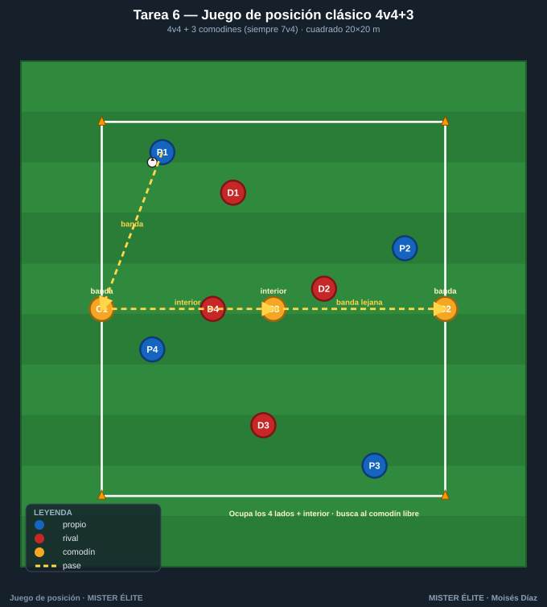
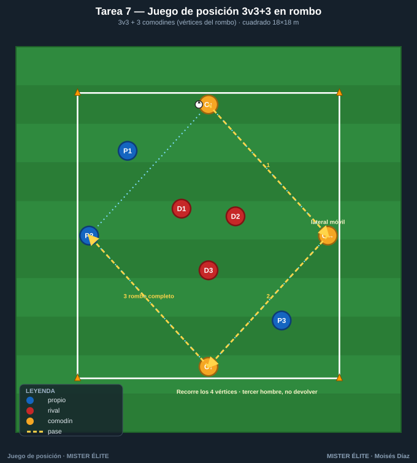
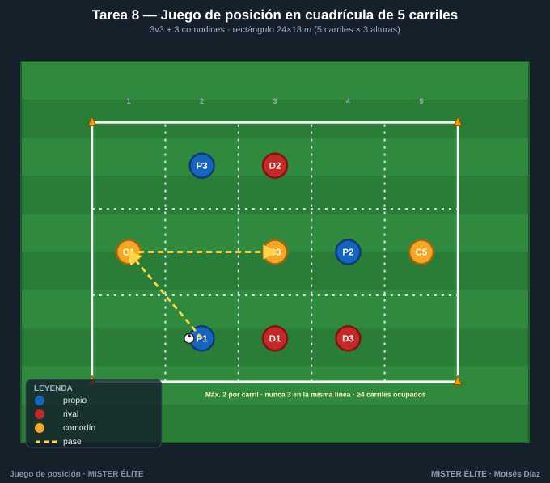
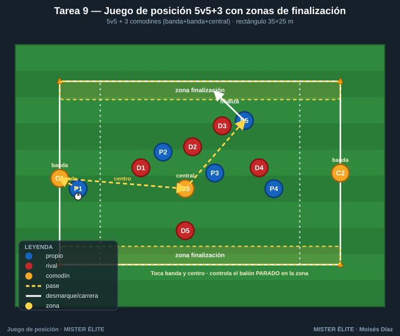
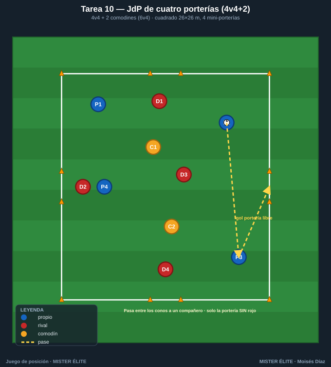

Familia 2 · Juegos de posición clásicos (T6–10)
Notación: poseedores azules, defensores rojos, comodines ámbar. El juego de posición añade al rondo dirección, estructura y superioridad posicional: porterías/zonas, carriles y líneas, comodines posicionados.
Tarea 6 — Juego de posición clásico 4v4+3
Objetivo. El JdP de referencia: superioridad por comodines (4+3 vs 4) y ocupación racional. Conservar y orientar bajo presión real de equipo.
Organización. - Relación: 4v4 + 3 comodines (3 comodines ámbar con el poseedor → siempre 7v4). - Medidas: cuadrado 20×20 m. - Material: 4 conos grandes esquina; conos de referencia para 3 comodines (2 en lados opuestos + 1 central). Petos 3 colores.

Desarrollo. Dos equipos de 4 dentro; 3 comodines neutrales juegan con quien posee. Conservar; al perder, los comodines apoyan al otro equipo. Los 2 comodines de banda dan amplitud, el central profundidad/interior.
Provocaciones (medibles). - Comodines de banda a 2 toques; comodín central a 1 toque. - Punto cada 6 pases consecutivos; doble si tocan los 3 comodines en la secuencia. - Tras pérdida, 5 s de contrapresión para recuperar antes de organizarse.
Variantes (fácil → difícil). 1. Fácil: campo 22×22, comodines libres de toques. 2. Media: reglas estándar. 3. Difícil: comodín central no puede devolver al que se la dio (tercer hombre) y campo 18×18.
Coaching. - Ocupar los 4 lados + el interior: no amontonarse. - Buscar al comodín libre (casi siempre el central o el de banda lejana). - Cuerpo orientado a la portería virtual (al espacio libre).
Duración. 4 series de 4 min, 2 min descanso. Rotar comodines a mitad.
Tarea 7 — Juego de posición 3v3+3 en rombo (dos pivotes)
Objetivo. Superioridad central con estructura de rombo. Conexión pivote-interiores en espacio reducido.
Organización. - Relación: 3v3 + 3 comodines (3 comodines ámbar formando eje: 1 arriba, 1 abajo, 1 lateral móvil). - Medidas: cuadrado 18×18 m. - Material: conos esquina + 3 conos de posición de comodines. Petos.

Desarrollo. 3 azules + 3 comodines (=6) contra 3 rojos. Mantener la estructura de rombo (siempre alguien arriba, abajo y a los lados) para circular por el comodín libre. Al perder, los comodines cambian de bando.
Provocaciones (medibles). - Prohibido tres pases seguidos entre los mismos 2 jugadores (rompe el ping-pong). - Punto cada vez que el balón recorre el rombo completo (4 vértices distintos) sin pérdida. - Comodines a 2 toques.
Variantes (fácil → difícil). 1. Fácil: 3v2+3, campo 20×20. 2. Media: 3v3+3. 3. Difícil: rombo a 1 toque en los comodines; un rojo puede saltar al vértice del balón.
Coaching. - Mantener el rombo: si un compañero ocupa tu altura, ajusta tú. - Tercer hombre: el comodín de un vértice juega al del siguiente, no devuelve. - Velocidad de circulación = ventaja; el balón corre más que el defensor.
Duración. 5 series de 3 min, 90 s descanso.
Tarea 8 — Juego de posición en cuadrícula de 5 carriles (3v3+3)
Objetivo. Ocupación racional del espacio: regla "no más de 2 por carril, no 3 en la misma línea". Escalonamiento posicional.
Organización. - Relación: 3v3 + 3 comodines (reparten amplitud y profundidad). - Medidas: rectángulo 24×18 m dividido en 5 carriles verticales (4,8 m c/u) y 3 líneas horizontales → cuadrícula 5×3. - Material: conos de carril (colores alternos para ver los 5 carriles). Petos.

Desarrollo. Posesión 3v3+3 con condición POSICIONAL: el poseedor debe cumplir las reglas de ocupación mientras circula. Un supervisor (o el entrenador) vigila infracciones.
Provocaciones (medibles). - Infracción si 3+ azules en el mismo carril o 3 en la misma línea → pérdida de posesión. - Punto cada 8 pases manteniendo ocupados ≥4 carriles distintos. - Comodines ocupan carriles exteriores (1 y 5) o central (3) según falte amplitud o interior.
Variantes (fácil → difícil). 1. Fácil: solo regla de carriles, 4 carriles. 2. Media: 5 carriles + ambas reglas. 3. Difícil: añadir dirección (puntúa más progresar de línea 1 a 3 ocupando bien).
Coaching. - "Si un compañero entra en tu carril, sal tú": ajuste permanente. - Escalonar alturas para crear líneas de pase diagonales. - Amplitud y profundidad máximas para estirar al rival.
Duración. 4 series de 4 min, 2 min descanso.
Tarea 9 — Juego de posición 5v5+3 con direccionalidad a zonas de finalización
Objetivo. JdP con finalidad: superioridad 8v5 con dirección. Progresar de banda a banda y "finalizar" estabilizando el balón en una zona objetivo.
Organización. - Relación: 5v5 + 3 comodines (1 por banda + 1 central; siempre 8v5). - Medidas: rectángulo 35×25 m. - Material: conos para 2 zonas de finalización (franjas de 3 m en cada extremo corto) + carriles de banda. Petos.

Desarrollo. Posesión con dirección: llevar el balón y controlarlo dentro de la zona objetivo del extremo que se ataca (un jugador recibe y para el balón en la franja). El otro equipo, al recuperar, ataca la zona contraria.
Provocaciones (medibles). - Gol = controlar el balón parado dentro de la zona tras pase (no conducido a dentro). - El balón debe haber tocado banda y centro (un comodín de banda + el central) antes de finalizar. - Comodines de banda 2 toques, central 1 toque.
Variantes (fácil → difícil). 1. Fácil: zonas de 4 m, finalización conducida válida. 2. Media: reglas estándar. 3. Difícil: el último pase debe venir del comodín de la banda contraria a donde empezó la jugada.
Coaching. - Atraer la presión a una banda y cambiar a la libre para finalizar. - El central conecta las dos bandas (jugar por dentro para cambiar). - Ritmo: pausa para fijar, aceleración para la finalización.
Duración. 4 series de 5 min, 2 min descanso.
Tarea 10 — Juego de posición de cuatro porterías (4v4+2) con cambio de zona
Objetivo. Decisión de a qué espacio progresar entre varias opciones. Cuatro porterías obligan a leer la menos defendida = hombre libre del espacio.
Organización. - Relación: 4v4 + 2 comodines (2 comodines ámbar con el poseedor → 6v4). - Medidas: cuadrado 26×26 m con 4 mini-porterías de conos (una al centro de cada lado). - Material: 8 conos (4 porterías) + esquinas + petos.

Desarrollo. Cada equipo ataca las porterías disponibles. Se marca pasando el balón raso entre los conos de una portería válida a un compañero al otro lado. Los comodines mantienen la superioridad.
Provocaciones (medibles). - Gol solo si la portería se cruza con un pase a un compañero (no conduciendo) y solo en la menos defendida (si hay un rojo delante, no cuenta). - No repetir la misma portería dos goles seguidos. - Tras gol, sigue el juego: contraataque inmediato.
Variantes (fácil → difícil). 1. Fácil: cada equipo defiende 2 fijas, comodines libres. 2. Media: 4 porterías abiertas, reglas estándar. 3. Difícil: 1 solo comodín (5v4) y obligación de tocar al comodín antes de cada gol.
Coaching. - Mirar las 4 porterías = mirar todos los espacios; ir donde no está el rival. - Fijar a un lado para liberar la portería opuesta. - Cabeza arriba constante: la mejor portería cambia cada 2-3 segundos.
Duración. 4 series de 4 min, 2 min descanso.
MISTER ÉLITE — Moisés Díaz · Familia 2 · Juegos de posición clásicos.